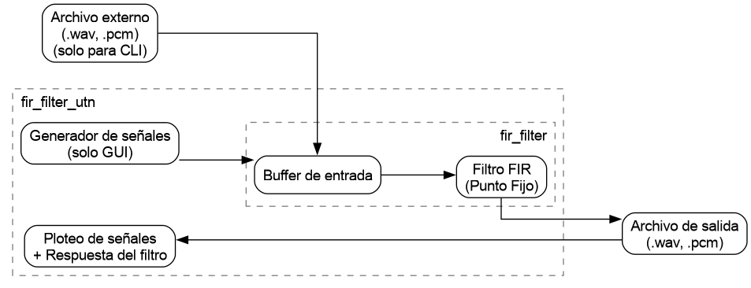
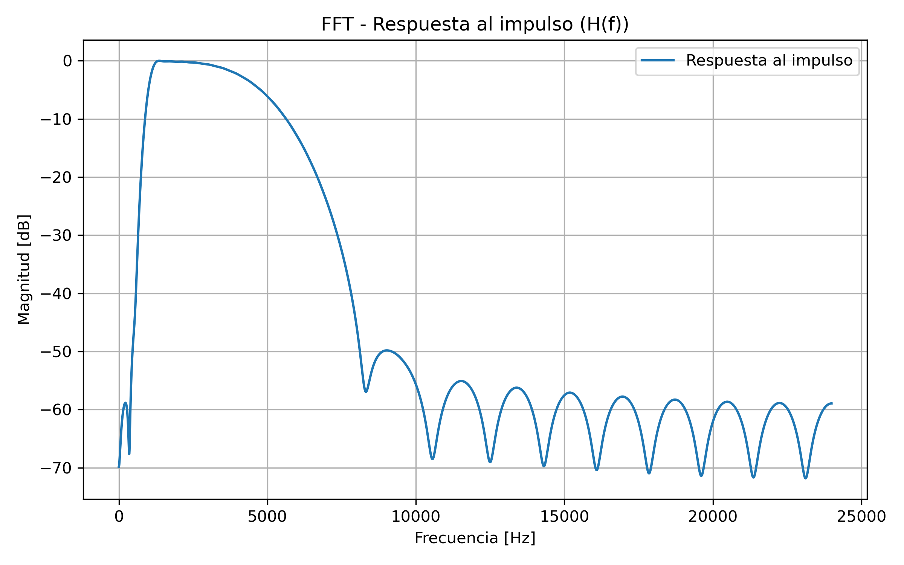

|
Filtro FIR para audio implementado en C para Linux arquitectura x86 Esteban Bustamante
Trabajo desarrollado como trabajo final de la materia Técnicas Digitales III
|
|
Filtro FIR para audio implementado en C para Linux arquitectura x86 Esteban Bustamante
Trabajo desarrollado como trabajo final de la materia Técnicas Digitales III
|
Este proyecto se presenta como parte práctica del trabajo final de la asignatura Técnicas Digitales III. Consiste en la implementación de un Filtro FIR (Finite Impulse Response) definido completamente en software, desarrollado en lenguaje C y orientado a sistemas digitales.
El filtro opera sobre muestras de entrada representadas en formato de punto fijo, haciendo uso de la librería FXP. Para garantizar el correcto sincronismo entre las muestras de entrada y el proceso de filtrado, se emplea un buffer de entrada que permite el procesamiento por bloques de muestras en paralelo.
Tanto la señal de entrada como la señal de salida del filtro se almacenan en archivos de datos en formato PCM (.pcm). Este formato simplifica el procesamiento posterior de los datos y garantiza compatibilidad con herramientas externas para la visualización y el análisis de señales.
Con el objetivo de facilitar su uso y análisis, el proyecto incluye una interfaz gráfica desarrollada en Python, que permite generar señales de prueba, ejecutar el filtro y visualizar gráficamente tanto la entrada como la salida. Asimismo, el filtro puede ser ejecutado directamente desde línea de comandos mediante una interfaz CLI.
Junto al binario se entrega una demostración lista para ser ejecutada tanto en modo gráfico como en modo línea de comandos. (ver Demostración).
El sistema completo se compone de múltiples bloques que interactúan entre sí, permitiendo tanto el procesamiento de señales como su análisis y visualización.

Los principales componentes son:
Esta arquitectura modular permite desacoplar el procesamiento numérico (implementado en C) de la interacción con el usuario y análisis (Python), facilitando la portabilidad, reutilización y extensibilidad del sistema.
El sistema implementa soporte para archivos de audio en formato WAV, permitiendo su integración directa con el flujo de procesamiento del filtro FIR.
Internamente, el filtro opera exclusivamente sobre datos en formato PCM de 32 bits (Q1.31), por lo que se incorporan mecanismos de conversión entre ambos formatos.
Los archivos WAV de entrada son leídos y convertidos a formato PCM32 mediante:
Este proceso permite utilizar señales reales como entrada del filtro, manteniendo consistencia con la representación interna del sistema.
Luego del procesamiento, la señal filtrada puede convertirse nuevamente a formato WAV, permitiendo:
La conversión incluye:
El sistema permite la reproducción de señales de entrada y salida mediante herramientas del sistema operativo (por ejemplo, aplay en Linux).
Esta funcionalidad facilita la validación perceptual del filtro, permitiendo evaluar su efecto directamente sobre señales de audio reales.
En conjunto, estas capacidades convierten al sistema en una herramienta completa de procesamiento de audio, integrando:
El filtro puede utilizarse de dos maneras:
Para ejecutar correctamente el entorno de simulación, visualización y GUI, es necesario instalar las dependencias de Python requeridas.
Se provee un script que automatiza este proceso.
Ejecutar:
Este script instala:
Además, en sistemas Linux, se recomienda contar con:
donde:
Para la validación del filtro FIR implementado, se diseñó un filtro pasabanda utilizando la herramienta externa FIIR, que permite generar coeficientes a partir de especificaciones en frecuencia.
El filtro generado presenta una respuesta al impulso equivalente a una función seno cardinal (sinc), con una frecuencia de muestreo de 48 kHz, una frecuencia de corte f1=1000 Hz y f2=5000Hz con un ancho de transición para ambos cortes de 700Hz.
A partir de la respuesta al impulso obtenida, se calculó su Transformada Rápida de Fourier (FFT), lo que permite analizar su comportamiento en frecuencia.

En dicha figura se observa la respuesta en frecuencia del sistema, verificando la atenuación en banda de rechazo y el comportamiento esperado del filtro FIR.
Para ejecutar la demostración en modo gráfico, será necesario descargar en primer lugar la última release, y luego utilizar los siguientes comandos para ejecutar el script con la interfaz gráfica:
Desde la interfaz gráfica es posible:
El filtro también puede ejecutarse directamente desde la línea de comandos. Para esto deberán tener los archivos coeficientes.pcm e input.pcm que se incluyen con el programa, incluídos en el link de las releases. Es necesario ubicar estos archivos dentro de la carpeta td3-proyecto-final-1.6.0 que se extrae del zip descargado. Luego ejecutando estos comandos podríamos correr el programa.
donde:
El archivo de salida se genera automáticamente en formato PCM y puede ser posteriormente visualizado o procesado con herramientas externas.
Si bien por el alcance de este proyecto puede considerarse terminado, estas son algunas mejoras interesantes que pueden interesarle al desarrollador: